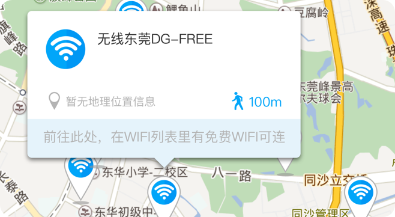
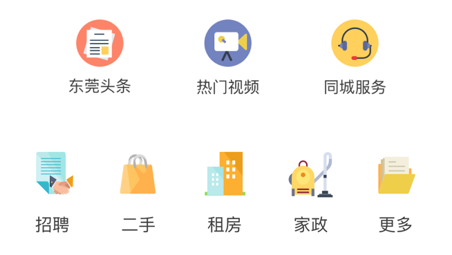
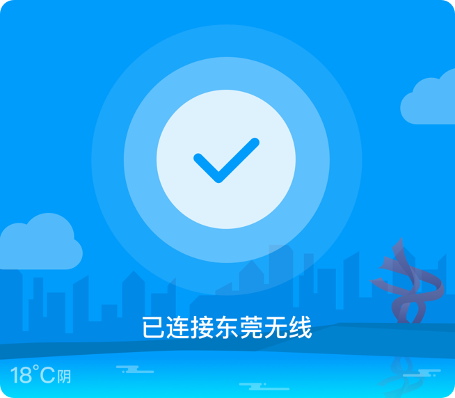

2017年，东莞市政府在全市建设3万个免费WiFi项目。东莞市民只需要一部手机、一个APP，即可一键免费上网。公益热点区域覆盖范围内，市民通过手机安装“东莞无线”APP，点击“一键连接”，连接后即可正常使用免费上网功能。 “东莞无线”实现了政府/医院/学校/等主要公共区域全覆盖，只需打开你的手机，即可得知附近WiFi信息。
除了免费上网功能，“东莞无线”更是你的贴身管家——“头条新闻”每日跟新，让你实时知晓社会大小事件；政务、交通出行、医疗服务等全民服务将为你的生活提供更多便利。
城市使生活更美好，WiFi让生活更实在。我们的每一次努力，都为是了让东莞生活变得更加美好，你的每一次连接，都将让你的生活多一份实在。不用到处找了，你所想要的都在这里，我们等候你的“一键连接”，带你深入了解精彩纷呈的东莞。
“东莞无线”免费WiFi大势来袭，拿起手机，一键下载安装，加入行列享受你的城市生活，朝着无限可能，一起出发吧。